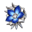
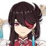
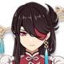

La caballera de la Marea, procedente de una familia con una gran linaje y Capitana del Equipo de Reconocimiento de los Caballeros De Favonius. Aunque es descendiente de la antigua aristocracia, se unio a los Caballeros de Favonius, sus archienemigos, algo que sigue siendo un gran enigma para todo mondstand hasta hoy en dia.
Artefacto/s recomendados



Atq%

Bono fisico

Prob/Daño critico
Prob/Daño critico > Atq% > Energia%
Talentos
Pasivas
Armas Recomendadas


Personajes compatibles
 
